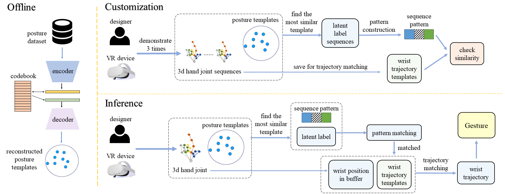
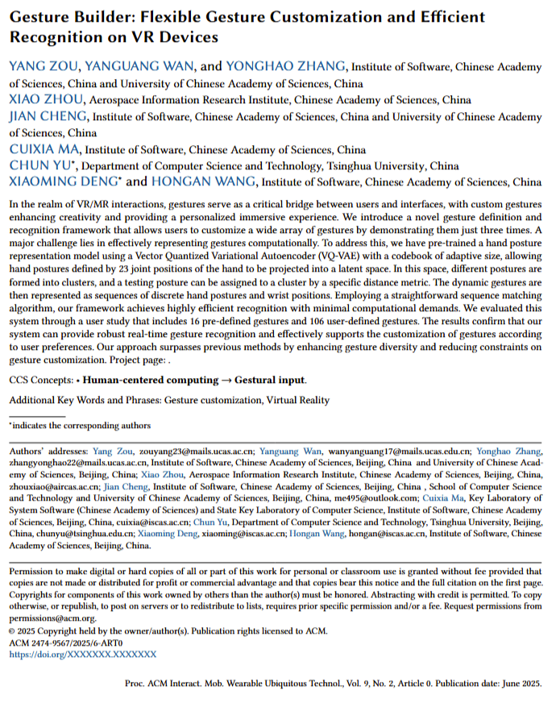

|
Yang Zou1,2
|
Yanguang Wan1,2
|
Yonghao Zhang1,2
|
Jian Cheng1,2
|
|

|
|
Overview of Gesture Builder framework.
We decompose dynamic gestures into sequences of static postures and wrist trajectories.
In the offline phase, we pre-train an unsupervised clustering model on a large-scale dataset to reconstruct posture templates.
During the customization process, we begin by identifying the reconstructed posture template most similar to the static posture of each frame and assigning the corresponding latent label to that frame.
In this way, input 3D hand joint sequences are converted to latent label sequences, which are then used to construct a sequence pattern.
Simultaneously, wrist positions are stored as wrist trajectory templates. In the inference phase, the latent label of the current frame is obtained in the same manner as during the customization process.
Then we match it against sequence patterns frame by frame. Once a sequence pattern is successfully matched, we compare the wrist trajectory with corresponding trajectory templates, ultimately recognizing the dynamic gesture.
|
In the realm of VR/MR interactions, gestures serve as a critical bridge between users and interfaces, with custom gestures enhancing creativity and providing a personalized immersive experience. We introduce a novel gesture definition and recognition framework that allows users to customize a wide array of gestures by demonstrating them just three times. A major challenge lies in effectively representing gestures computationally. To address this, we have pre-trained a hand posture representation model using a Vector Quantized Variational Autoencoder (VQ-VAE) with a codebook of adaptive size, allowing hand postures defined by 23 joint positions of the hand to be projected into a latent space. In this space, different postures are formed into clusters, and a testing posture can be assigned to a cluster by a specific distance metric. The dynamic gestures are then represented as sequences of discrete hand postures and wrist positions. Employing a straightforward sequence matching algorithm, our framework achieves highly efficient recognition with minimal computational demands. We evaluated this system through a user study that includes 16 pre-defined gestures and 106 user-defined gestures. The results confirm that our system can provide robust real-time gesture recognition and effectively supports the customization of gestures according to user preferences. Our approach surpasses previous methods by enhancing gesture diversity and reducing constraints on gesture customization.
|  |
Y. Zou, Y. Wan, Y. Zhang, X. Zhou, J. Cheng, C. Ma, C. Yu, X. Deng, H. Wang
Gesture Builder: Flexible Gesture Customization and Efficient Recognition on VR Devices. Ubicomp, 2025. [Paper] [Bibtex] [Code] |
Acknowledgements
This work was supported in part by National Science and Technology Major Project (2022ZD0117904), National Natural Science Foundation of China (62473356,62373061), Beijing Natural Science Foundation (L232028), CAS Major Project (RCJJ-145-24-14), Science and Technology Innovation Key R\&D Program of Chongqing (CSTB2023TIAD-STX0027), and Beijing Hospitals Authority Clinical Medicine Development of Special Funding Support No. ZLRK202330. We express our gratitude to the reviewers for their valuable comments and insights. Our sincere thanks go to all participants who actively contributed to the data collection and the user comparative study. Special thanks to Chenyu Meng, Wentian Qu, Zeyuan Huang, Chen Ju, Qiming Zhu, and all who dedicated their efforts and offered valuable feedback throughout the entire process.
The websiteis modified from this template.
|